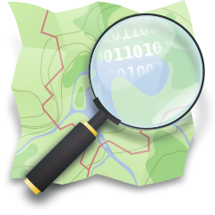
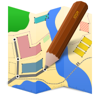

Show all on map
Hide all from map
Expand all
Collapse all


{{ master.tags.name }}
{{ (master.errors.length > 0) ? "Errors:" : "" }}
{{ route.tags.name }}
{{ (route.errors.length > 0) ? "Errors:" : "" }}
{{ (route.platforms.length > 0) ? "Platforms:" : "" }}
{{ getPlatformName(platform_id) }}
Data from {{ routesSvc.metadata.time }} (UTC).
bus_route_checker
bus_route_checker